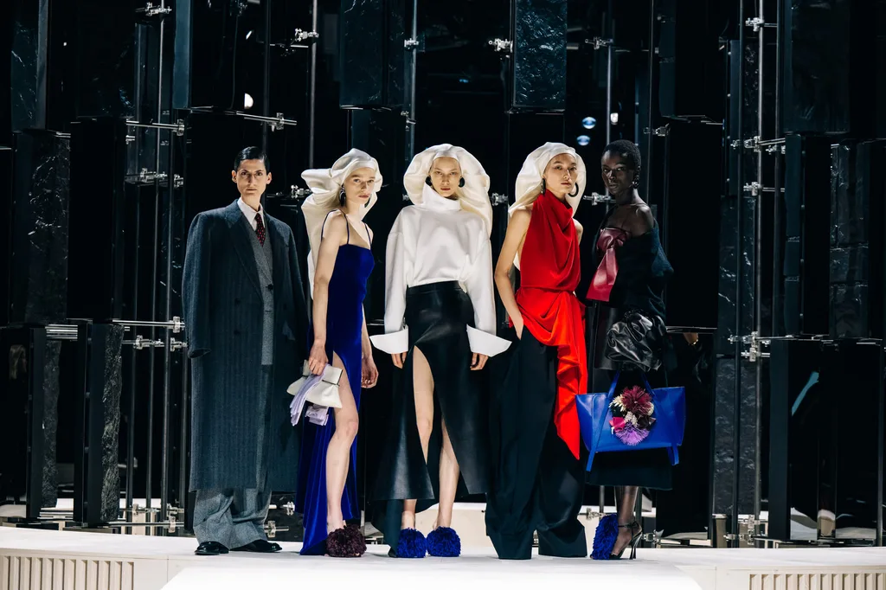

Xu hướng
Phong cách tối giản lên ngôi mùa Thu

Sau nhiều mùa mốt rực rỡ họa tiết, phong cách tối giản tiếp tục được ưa chuộng khi người tiêu dùng tìm về sự tinh tế, bền vững thay vì phô trương.
Bảng màu trung tính như be, kem, xám tro là những gam màu chủ đạo, giúp tôn lên chất liệu và đường cắt may của từng thiết kế.
Denim trở lại mạnh mẽ
Denim không còn chỉ là trang phục thường ngày mà được biến tấu thành váy dạ hội, áo khoác và phụ kiện tinh xảo trong mùa này.
Bình luận
-
Thảo Vy
1 ngày trước
Xu hướng này rất hợp với công sở, mình sẽ thử áp dụng.